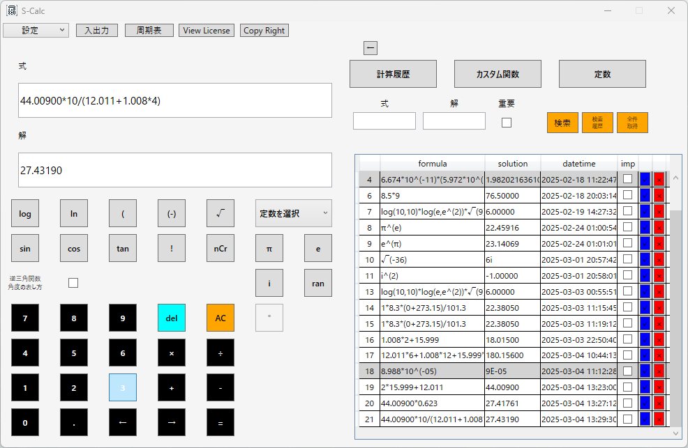

S-Calc 化学反応計算の応用
反応量・生成量の計算（化学量論）
10.0gのメタン（CH4）を完全燃焼させるとき、二酸化炭素が何g生成されるか？
反応式：
CH4 + 2O2 → CO2 + 2H2O解法：
[C:12.011g/mol]と[H:1.008g/mol]からメタンのモル質量を求める。
12.011 + 1.008 × 4 = 16.043 g/mol
１で算出したモル質量を物質量（mol）に変換。
10 g ÷ 16.043 g/mol = 0.623 mol
発生する二酸化炭素の物質量は反応式から読み取れる反応比より
反応前のメタンの物質量：0.623 mol
二酸化炭素の質量を求める。
二酸化炭素のモル質量 = 2 × 15.999 + 12.011 = 44.00900 g/mol
反応後の二酸化炭素の物質量：0.623 mol
二酸化炭素の物質量 = 0.623 mol より、
44.00900 g/mol × 0.623 mol = 27.4 g
これを「S-Calc」で算出する。

段階を踏んで計算を行った解とS-Calcの解に若干の差はあるが、おおよそ許容することが出来るものである。